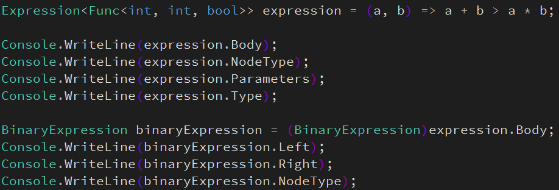
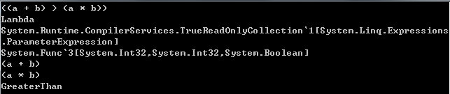
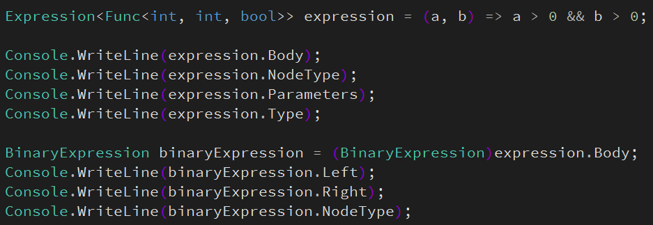
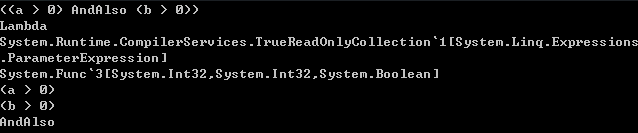
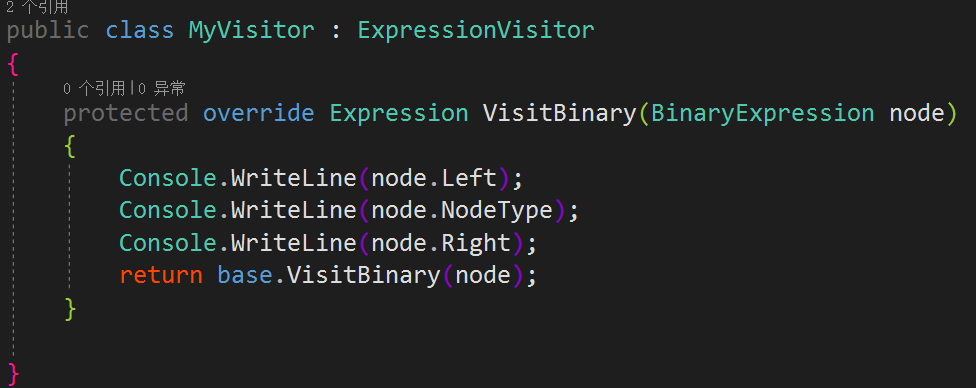
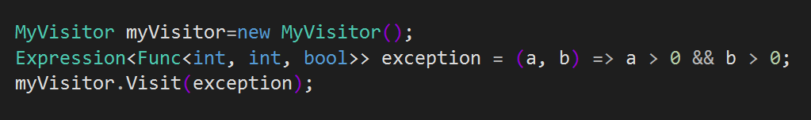
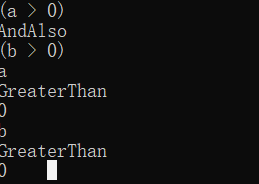
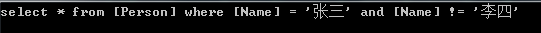

在使用 EF 开中我们经常使用 xx.Where(p=>p.Name="张三") 查询数据，之把能这样是因为 EF 框架会把这些C#代码转成Sql语句， 其中主要用到的就是表达式树，今天就来学习一下表达式树。
Func<int,int,int> func = (a, b) => a + b;
Expression<Func<int,int,int>> expression = (a, b) => a + b;上面分别是 Func 委托和表达式树，看上去很相似，左边只多了 Expression<> 右边完全一样，其实还是有很大区别的，对于委托我们只能传递参数来调用，内部的代码在程序运行中是无从得知的，而表达式树在这点上相反，表达式树是一种数据结构，可以通过 C# 代码清晰的获取内部的细节。
上面的例子中是使用 Lambda 为表达式树赋值，其实还有另一种写法
ParameterExpression parameterA = Expression.Parameter(typeof(int),"a");
ParameterExpression parameterB = Expression.Parameter(typeof(int),"b");
BinaryExpression binaryExpression = Expression.Add(parameterA, parameterB);
Expression<Func<int, int, int>> expression = Expression.Lambda<Func<int, int, int>>(binaryExpression,parameterA,parameterB);
上面的例子对应于第一种写法，第一种写法是语法糖，其实编译器最终生成还是这种代码，可以通过反编译软件来验证。
认识一下表达式树的主要部分
Body：表达式主体，例子中是二元表达式，常用的还有
NodeType：节点类型，例子中是 Lambda ，常用还有的+，-，*，/，>，=，<，&&，|| 等都有，不过并不是符号而是对应的英文，详情查看 ExpressionType 枚举
Parameters：表达式的参数，a 和 b
Console.WriteLine(expression.Body);
Console.WriteLine(expression.NodeType);
Console.WriteLine(expression.Parameters[0]);
Console.WriteLine(expression.Parameters[1]);输出是
(a + b)
Lambda
a
b
Body 的类型是 Expression，例子中的是二元表达式，所以要转换成 BinaryExpression 类来查看信息
BinaryExpression binaryExpression = (BinaryExpression)expression.Body;
Console.WriteLine(binaryExpression.Left);
Console.WriteLine(binaryExpression.Right);
Console.WriteLine(binaryExpression.NodeType);输出是
a
b
Add
刚才是一个简单表达式，再来看两个复杂点的，经过第一次解析后 Left 和 Right 就是第一种解析的表达式，可以把 Left 和 Right 再解析一次，最终完全解析，不管多复杂的表达式都可以像这样解析出来




上面的例子只是为了了解表达式树结构，用这种方法解析存在两个问题
一是 BinaryExpression 这里固定了只能解析二元表达式，如果是其它表达式就会报错
二是不知道需要解析多少层才解析完
要解析表达式树要用 C# 里的 ExpressionVisitor 类，这个类就是专门解析表达式树的，它是一个抽象类，需要建个类继承它，使用过程如下，首先调用父类 Visit 方法，在 Visit 中会判断表达式的类型是一元（对应VisitUnary）、二元（对应VisitBinary），常量（对应VisitConstant）、参数（对应VisitParameter）等表达式，然后就会进对应的解析方法中支解析，比如二元表达式的解析方法就是 VisitBinary，然后我们重写 VisitBinary
下面是使用 ExpressionVisitor 解析表达式树的例子，这么说并不完全对，解析代码是 ExpressionVisitor 已经写好的，我们做的只解析过程中加入一些自己的代码而已



最后来实现一个简单的由表达式树生成sql语句的功能
class MyVisitor : ExpressionVisitor
{
private string tableName;
private StringBuilder sbSql = new StringBuilder();
public override Expression Visit(Expression node)
{
return base.Visit(node);
}
protected override Expression VisitBinary(BinaryExpression node)
{
base.Visit(node.Left);
sbSql.Append(ExpressionTypeToSql(node.NodeType));
base.Visit(node.Right);
return node;
}
public string GetSqlString()
{
return "select * from "+tableName+" where "+sbSql.ToString();
}
protected override Expression VisitConstant(ConstantExpression node)
{
if (node.Type == typeof(int))
{
sbSql.Append( node.Value);
}
else
{
sbSql.Append("'"+node.Value+"'");
}
return base.VisitConstant(node);
}
protected override Expression VisitParameter(ParameterExpression node)
{
if (tableName == null)
{
tableName = "[" + node.Type.Name + "]";
}
return base.VisitParameter(node);
}
protected override Expression VisitMember(MemberExpression node)
{
sbSql.Append("[" + node.Member.Name + "]");
return base.VisitMember(node);
}
public string ExpressionTypeToSql(ExpressionType expressionType)
{
switch (expressionType)
{
case ExpressionType.Add:
return " + ";
case ExpressionType.And:
case ExpressionType.AndAlso:
return " and ";
case ExpressionType.Equal:
return " = ";
case ExpressionType.NotEqual:
return " != ";
case ExpressionType.GreaterThan:
return " > ";
case ExpressionType.GreaterThanOrEqual:
return " >= ";
case ExpressionType.LessThan:
return " < ";
case ExpressionType.LessThanOrEqual:
return " <= ";
case ExpressionType.Multiply:
return " * ";
case ExpressionType.Or:
case ExpressionType.OrElse:
return " or ";
default:
return "";
}
}
}Expression<Func<Person, bool>> expression = p=>p.Name=="张三"&&p.Name!="李四";
MyVisitor myVisitor = new MyVisitor();
myVisitor.Visit(expression);
Console.WriteLine(myVisitor.GetSqlString());
写得有点乱，忘见谅